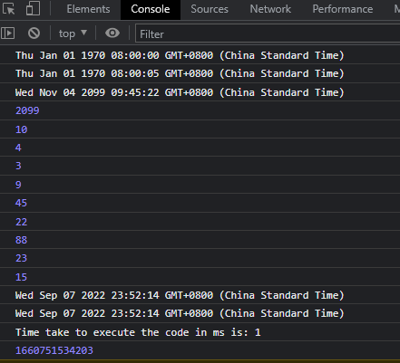

setInterval(function test() {
let currentDateTime = new Date();
//console.log(currentDateTime);
document.querySelector("#dateTime").innerHTML = currentDateTime;
}, 1000);
let date1 = new Date(0);
console.log(date1);
date1 = new Date(5000);
//Time elapsed in ms from Jan 01 1970 01:00:00
console.log(date1);
// Jan 01 1970 01:00:05

//let date2 = new Date(year, month, day, hour, minutes, seconds, milliseconds);
//Wed Nov 04 2099 09:45:22
let date3 = new Date(2099, 10, 4, 9, 45, 22, 88);//month starts from 0 to 11
console.log(date3);
let startTime = Date.now();
console.log(date3.getFullYear());
console.log(date3.getMonth());//0 to 11
console.log(date3.getDate());//actual date, here its 4th
console.log(date3.getDay());//day of the Week, 3-wednesday
console.log(date3.getHours());
console.log(date3.getMinutes());
console.log(date3.getSeconds());
console.log(date3.getMilliseconds());
let formattedDate = `Date is ${date3.getDate()}/${date3.getMonth() + 1}/${date3.getFullYear()}`;
document.querySelector("#formattedDate").innerHTML = formattedDate;
//UTC - coorcinated universal time - London
let date4 = new Date();
console.log(date4.getHours());//ur local hours now
console.log(date4.getUTCHours());//current hour in London
console.log(date4);
date4.setDate(38);//add 5 to the Day part of date
console.log(date4);
let endTime = Date.now();
console.log("Time take to execute the code in ms is: " + (endTime - startTime));
let timeElapsedInMs = Date.now();
console.log(timeElapsedInMs);